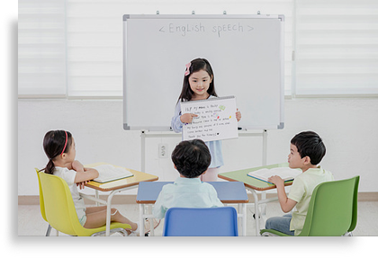

영어는 ‘언어’ 입니다. 그렇기 때문에 한가지 영역만이 아닌 듣기, 읽기, 말하기, 쓰기를 통합적으로 학습해야 합니다.
4skills 밸런스 교수법으로 영어의 어순감각과 기본기를 다지고 Input과 Output의 유기적인 학습법으로
영어의 응용과 확장을 이끌어내어 평생 가는 영어를 완성시키는 것이 정철어학원주니어의 교육 철학입니다.
외국어학원 랭키닷컴 연속 1위, 최우수 AAA 컨텐츠, 교육인적자원부 후원
한국교육산업대상 수상, 산업자원부 후원 대한민국 교육산업 경영인 대상,
특허청 인증 온라인 언어속독훈련 교수법 획득 등 어학교육의 효과성을
검증 받은 교수법
국내 최초 강사자격 인증제 도입
커리큘럼 교육과 시스템 교육, 실제 강의 시연 등 필수 교수법 훈련부터
상담과 마케팅 학원관리까지 전문적인 경영 노하우를 제공하는
강사 트레이닝 시스템
반짝하고 사라지는 게 아닌, 평균 운영 10년 이상 초중등 영어 교육시장을
선도하는 영어 어학원으로 신뢰도와 안정성 보장
40년이 넘도록 영어교육 한 길만 걸어온 풍부한 교육 경험
그리고 그 노하우를 기반으로 한 Output 중심의 실용영어 커리큘럼 보유
“4 skills 밸런스 커리큘럼으로 듣기, 읽기, 말하기, 쓰기 뿐 아니라
어휘력과 문법까지 발달하는 통합적 커뮤니케이션 능력을 갖추게 됩니다.”

“영어 연극, 스토리텔링, 프레젠테이션까지 학생 참여 중심기반 수업으로
영어를 실제로 표현할 기회가 많습니다”
“영미권 학교 커리큘럼 공통 콘텐츠로 시사, 과학, 역사, 문화 전반의 배경지식을
함양하고 더 나아가 창의력과 사고력이 향상됩니다”
“어순감각 스킬 교수법으로 영어를 모국어 습득하듯이 훈련하여 자연스러운
발화가 가능해집니다”
수행평가 주제와 연관 된 교과목 콘텐츠를 자주 접하며
영어 연극, 스토리텔링, 프레젠테이션이 익숙해 집니다.
서로의 생각을 함께 공유하는 영어 토론 및 학생 참여 수업을 통해 영어적 창의력과 사고력이 향상 됩니다
어순감각 스킬 교수법으로 발음, 억양 등 모국어를 배우듯 글로벌 소통 능력을 자연스럽게 습득 합니다.